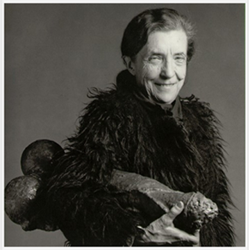
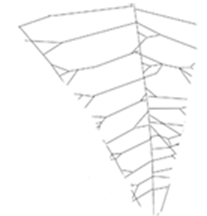

Louise Bourgeois
The Nest Spider 1 Spider 2003 Artist  Louise Bourgeois is a French American artist mostly known for making her gigantic sculptures of spiders. Her work deals with the themes of sexuality, childhood trauma, and memory. Her spider sculptures were inspired by her mother who worked in a tapestry workshop.